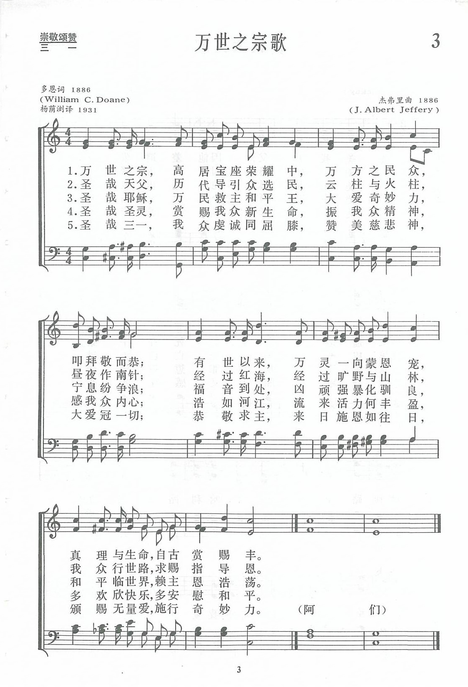
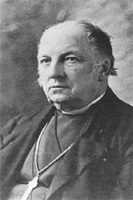
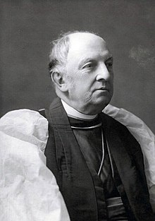

|
|
【萬世之宗歌】 |
|
1 Ancient of Days, who sittest, throned in glory, 2 O Holy Father, who hast led Thy children 3 O Holy Jesus, Prince of Peace and Saviour, 4 O Holy Ghost, the Lord and the Life-giver, 5 O Triune God, with heart and voice adoring, Amen.
|
萬世之宗，高居寶座榮耀中，萬方之民眾，祈求敬而恭； |
|
https://www.zanmeishige.com/tab/13634.html?songbook=1&index=3

|
|
|
|
|


万世之宗歌 - 千首精选赞美诗之0880 https://youtu.be/ihyJ6m_6Pwc -
Ancient of Days, Who Sittest Throned in Glory (Ancient of Days) https://youtu.be/irAqoFtiiXM https://youtu.be/BqzYdslvV7U
| Text: | Ancient of Days |
| Author: | William C. Doane, 1832-1913 |
| Tune: | ANCIENT OF DAYS |
| Composer: | J. Albert Jeffery, 1854-1929 |
| Short Name: | William Croswell Doane |
| Full Name: | Doane, William Croswell, 1832-1913 |
| Birth Year: | 1832 |
| Death Year: | 1913 |
Doane, William Croswell, D.D., son of Bp. G. W. Doane (p. 303, ii.),

was born at Boston, Mass., March 2, 1832, and ordained D. 1853, and P. 1856, in the Prot. Episcopal Church of America. He was Rector of Burlington, N.J., Hartford, Conn, and Albany; and since 1869 Prot. Episco. Bishop of Albany. He is the author of a Biography of his father, and other works. His fugitive verse was collected and published [in 1902], as Rhymes from Time to Time. His hymn, "Ancient of Days, Who [that] sittest throned in glory" (Holy Trinity), was written for the Bicentenary of the City of Albany, 1886. In some collections it begins with stanza ii., "O Holy Father, Who hast led Thy children." For full text see The Hymnal, edition 1892, of the Prot. Episco. Church of America, No. 311. Bp. Doane is D.D. of Oxford, and LL.D. of Cambridge. [Rev. L. F. Benson, D.D.]
--John Julian, Dictionary of Hymnology, New Supplement (1907)
Tune Information
| Title: | ANCIENT OF DAYS (Jeffery) |
| Composer: | J. Albert Jeffery (1886) |
| Meter: | 11.10.11.10 |
| Incipit: | 55556 51736 55667 |
| Key: | C Major |
| Copyright: | Public Domain |
| Short Name: | J. Albert Jeffery |
| Full Name: | Jeffery, J. Albert (John Albert), 1855-1929 |
| Birth Year: | 1855 |
| Death Year: | 1929 |
Born: October 26, 1855,
Plymouth, England.
Died: June 4, 1929, Brookline, Massachusetts.
Jeffery (sometimes misspelled as Jeffrey) began playing the organ at St. Anne’s Cathedral in Plymouth at age 14, taking over his father’s position. He emigrated to America in 1876 and settled in Albany, New York. He developed a chorus and directed the music at St. Agnes School, and played the organ at the Protestant Episcopal Cathedral. He left for Yonkers, New York, in 1893, and served at the First Presbyterian Church. Later, he taught music at the New England Conservatory.
--www.hymntime.com/tch
第3首 万世之宗歌 Ancient of Days, Who sittest throned in glory
经文：“我观看，见有宝座设立，上头坐着亘古常在者，他的衣服洁白如雪，头发如纯净的羊毛，宝座乃火焰，其轮乃烈火……事奉他的有千千，在他面前侍立的有万万“（但7：9-10）。
《万世之宗歌》是美国圣公会奥尔巴尼教区主教多恩，在1886年为庆祝奥尔巴尼城建市200周年时，所写的一首歌颂三一至尊的圣诗。这是一首充满了圣经宝训和爱国热情的圣诗。
第一节“万方之民众，叩拜敬而恭”，是引用但以理书第7章9至10，13至14，21至22等节：“事奉他的有千千，在他面前侍立的有万万”，“使各方各国各族的人都事奉他”；
第二节是赞颂圣哉天父“历代导引众选民”，追叙了以色列人经历旷野后建国的历史(参诗105：39，42-43)；
第三节赞美主耶稣为“万民救主和平王”(参赛9：6；太8：23-27)；
第四节赞颂圣灵“赏赐我众新生命”(参约14：16-17；徒2：4，17-18)；
第五节以歌颂“圣哉三一”结束全诗。这一节也同样是回想以色列民在瞻仰耶路撒冷城垣时所迸发出的热切愿望和虔诚祝祷，如“耶和华也照样围绕他的百姓，从今时直到永远”(参诗125：1-2)。
全诗虔诚庄严，是体会经训而不是堆砌经文。
威廉．克劳斯威尔．多恩(W．C．Doane，1832-1913)①生于美国波士顿，大学毕业后进研究院，曾在两所大学得硕士学位。受圣公会圣职后，先任他父亲乔治．华盛顿．多恩主教的助理，后任哈特福德城圣保罗堂和纽约州奥尔巴尼城圣彼得堂区牧。他一贯工作努力，成绩卓著，名扬四方。1869年奥尔巴尼划为一个独立的教区，他被选为首任主教；1892年美国圣公会赞美诗出版时，他任编委会主席。由于他有效的领导和宽大的胸襟，不但赢得圣公会各教区、牧区的拥护，而且得到其他教派同工同道的钦佩与赞扬。他又以诗文见长，英国的牛津、剑桥以及美国六个大学先后赠送他荣誉博士学位。
曲调乃名音乐家杰弗里(J．A．Jeffery，1855-1929)应多恩之请特为这首诗所谱的。杰弗里原籍英伦，幼年时跟他父亲学音乐，以后留学德国莱比锡音乐学院；随著名音乐家赖内克学习钢琴，又在魏玛跟李斯特学习，成绩斐然，后来莱比锡音乐学院史无前例地赠送他荣誉音乐博士学位。1876年移居美国，作此曲时正好是在奥尔巴尼城任音乐教授兼钢琴教师，同时，还担任该城圣公会主教座堂的唱诗班指挥。
这首诗除有四部合唱的雄壮曲谱外，还附有管风琴伴奏。当时称这首调名为《万世之宗(ANCIENT OF DAYS)》。以后这首诗和曲编入美国圣公会的赞美诗内，改称为《奥尔巴尼(ALBANY)》，沿用至今。
① 《新编》内有三位多恩。请参阅作者索引。
Words: William Croswell Doane (b. Mar. 2, 1832; d. May
17, 1913)
Music: Albany, by John Albert Jeffery (b. Oct. 26, 1855; d.
June 4, 1929)
Links:
Wordwise Hymns (none)
The Cyber
Hymnal
Hymnary.org
Note: William Doane was the son of hymn writer George Washington Doane, who gave us Softly Now the Light of Day, and Fling Out the Banner. William Doane became the Episcopal Bishop of Albany, New York. He wrote the present song to be sung at the city’s bi-centennial. William Croswell Doane should not be confused with William Howard Doane (1832-1915) who wrote the tunes for many of Fanny Crosby’s gospel songs.
There are many fine Trinitarian hymns, such as: Reginald Heber’s familiar Holy, Holy, Holy, and Elizabeth Charles’s Praise Ye the Triune God. Another is Doane’s. It has been praised by historians, though I don’t believe it belongs in quite the high rank of the other two mentioned. The title “Ancient of Days” (from Dan. 7:9, 13, 22) refers to the eternal Father.
There’s a word game called Taboo, which the inventors describe as “the game of unspeakable fun.” One player draws a card and tries to get teammates to say the key word that’s on it. But he is not allowed to say any form of the word, and there are other related words that are “taboo” as well, as well as related hand actions and sound effects.
Suppose the word is EGG. The card prohibits using words such as: scramble, yolk, chicken, bacon, and breakfast. No hand motions or sounds (clucking like a chicken) can be used, either. You might try saying: hatch, Easter, or nog.
While the game can be great fun, it’s also a reminder of the importance of words. We need them, and we have lots of them. The unabridged Oxford Dictionary (in twenty volumes) currently contains definitions for 171,476 English words. And if there isn’t a word for something, we invent one, and the dictionaries will add it later.
Long before television sets were found in our homes, they were the province of science fiction, and scientific theories. In the nineteenth century, they spoke of having telephote and televista. The word television was apparently used first in a scientific paper, around 1900. It combines two Greek words: tele (far), and visio (seeing). The short-form TV came along in the 1940’s.
The English Bible is made up of words–783,137 of them, in the King James Version. These are, in turn, translations of words in the original Hebrew (with some Aramaic) and Greek texts. And whenever we move from one language to another there can be complications. For example, the Bible speaks of Jesus as “the Lamb of God” (Jn. 1:29). But the first Christian missionaries to the Inuit in the far north had a problem. The people there had never seen a lamb, and didn’t know what it was. Calling Jesus “the Seal of God,” as they did, at least conveyed the idea of innocence to them.
At the opposite end of the spectrum, in terms of familiarity, is the word “God.” Virtually every religion speaks of a deity of some kind. But that does not mean all religions identify the same one. Jehovah God of the Bible, the one Supreme Being who created all things and rules over all, says,
“There is no other God besides Me, a just God and a Saviour; there is none besides Me” (Isa. 45:21). “The LORD [translating Jehovah, or Yahweh] is the true God; He is the living God and the everlasting King” (Jer. 10:10).
One of the things that distinguishes the one true God is His tri-unity. The Bible is adamant that there is only one God (Deut. 6:4). Even the demons accept that, and tremble in terror of Him (Jas. 2:19). Yet there are three distinct and co-equal persons in the Godhead: the Father, the Son, and the Holy Spirit. Each has His own distinct but fully harmonious ministry in the Godhead, and is worthy of equal honour (cf. Jn. 5:23).
Though the word Trinity is not found in the New King James Version of the Bible, the concept certainly can be defended from Scripture. We say, therefore, that God is a Trinity, a term borrowed from the Latin trinitatem. A denial of orthodox teaching in this regard is heresy. From its earliest times, the church has defended the full deity of God the Father, God the Son, and God the Holy Spirit.
All three Persons were active at Jesus’ baptism (Matt. 3:13-17), and the later baptismal formula invokes the authority of all three Persons: “in the name of the Father, and of the Son, and of the Holy Spirit” (Matt. 28:19). God’s blessing is pronounced in the name of all three: “The grace of the Lord Jesus Christ, and the love of God, and the communion of the Holy Spirit be with you all. Amen” (II Cor. 13:14).
As with other hymns dealing with the Trinity, succeeding stanzas of Doane’s hymn worship and praise, in turn, the Father, the Son, and the Holy Spirit. Here are two stanzas.
CH-1) Ancient of Days, who sittest throned in glory,
To Thee all knees are bent, all voices pray;
Thy love has blessed the wide world’s wondrous story
With light and life since Eden’s dawning day.
CH-5) O Triune God, with heart and voice adoring,
Praise we the goodness that doth crown our days;
Pray we that Thou wilt hear us, still imploring
Thy love and favour kept to us always.
Questions:
1) Why is the teaching of one God in three Persons difficult to
understand?
2) What is the best explanation or illustration of the Trinity you have found?
Links:
Wordwise Hymns (none)
The Cyber
Hymnal
Hymnary.org
William Croswell Doane 1832, –1913
|
The Right Reverend
William Croswell Doane
|
|
|---|---|
| Bishop of Albany | |
|

William Croswell Doane in 1898
|
|
| Church | Episcopal Church |
| Diocese | Albany |
| Elected | December 3, 1868 |
| In office | 1869–1913 |
| Successor | Richard H. Nelson |
| Orders | |
| Ordination |
March 16, 1856 by George Washington Doane |
| Consecration |
February 2, 1869 by Horatio Potter |
| Personal details | |
| Born |
March 2, 1832 |
| Died |
March 17, 1913 (aged 81) New York City, New York, United States |
| Buried | Cathedral of All Saints (Albany, New York) |
| Nationality | American |
| Denomination | Anglican |
| Parents | George Washington Doane & Eliza Greene Perkins Callahan |
| Spouse | Sarah Katharine Condit |
| Children | 2 |
{kind=link}
William Croswell Doane (March 2, 1832, in Boston[1] – May 17, 1913, in New York City[1][2]) was the first bishop of the Episcopal Diocese of Albany in the United States. He was bishop from 1869 until his death in 1913.
Doane served about 60 years in ordained ministry, a huge span for those times. As bishop, he managed the construction of the Cathedral of All Saints in Albany, the first Episcopal cathedral built for that purpose in the United States. It is now on the National Register of Historic Places. Doane is probably best known today for his Anglican hymn, "Ancient of Days".[3] As a student at Burlington College in New Jersey, he was one of three founding members of the Delta chapter of the college fraternity of Delta Psi (ΔΨ)), later known as St. Anthony Hall after the chapter transferred to the nearby University of Pennsylvania.[4][5]
Early life[edit]
Doane was born in Boston, and named for his father's best friend, the Rev. William Croswell.[1] When he was born, his father, the Rev. George Doane, was Rector of the prominent Trinity Church, Boston, located on Copley Square.[1][6]
Within a year, his father was elected second Bishop of New Jersey (since the American Revolutionary War and establishment of the American Episcopal Church).[1][6] The family settled in the see of Burlington, New Jersey, which had been settled largely by Quakers in colonial times and also has the oldest Episcopal church in the state. Doane attended the private Episcopal Burlington College there, founded in 1846 by his father.[1]
He graduated from Burlington College, where he and two friends had co-founded the fourth, or "Delta" chapter of the fraternity Delta Psi. It became known as St. Anthony Hall for a building it used after moving to the University of Pennsylvania in nearby Philadelphia.[1][4] After college, Doane became an Episcopal priest. Like his father, he became involved in the Oxford Movement, which sought to restore richness of practice to the liturgy.[1]
Clergy[edit]
Doane was ordained a deacon on March 6, 1853, by his father at his home parish of St. Mary's.[1] Shortly thereafter, he married the former Sarah Katharine Condit, daughter of Joel W. and Margaret Harrison Condit of Newark, New Jersey, and his two children were born in Burlington, Eliza Greene in 1854, and Margaret Harrison in 1858. After he was ordained a priest in 1856 in the same church, he was called to St. Barnabas Free Church in Burlington. He served there until 1860.[1]
In 1863, Doane accepted a call to St. John's Church, Hartford, Connecticut, and he served there during the American Civil War.[1] His parishioner Mark Twain pulled a joke on Doane, claiming, "I have ... a book at home containing every word" of Doane's sermon that Sunday, then sent him an unabridged dictionary.[7]
Doane was called to Albany, New York in 1867 to serve "the venerable parish of St. Peter's, Albany."[1] The General Convention of 1868, in New York City, founded a new diocese of Albany. Doane was elected the first bishop at the organizational convention of the diocese in St. Peter's Church.[1][6] His election had "strong opposition," because he was a "young rector," but also because "the evangelical element ... looked upon Mr. Doane as a high churchman, [with] his ritualistic practices...." adopted as part of the Oxford Movement influence.[1]
Episcopal consecration[edit]
His consecrators were:
- Right Reverend Horatio Potter, Bishop of New York
- The Right Reverend William H. Odenheimer
- The Right Reverend Henry A. Neely.[1]
William Croswell Doane was the 92nd bishop consecrated in the Episcopal Church.
Work as Bishop[edit]
Doane had a large diocese, and spent many years in visitation, establishing churches, and confirming persons.[1] For many years his biggest project was supervising the building of the Cathedral of All Saints, his major legacy.[1][6] He got the land donated by the wealthy Erastus Corning. The cathedral was incorporated in 1873, and the laying of its cornerstone on a downtown site on June 3, 1884, took place "with impressive ceremony."[1] With construction complete enough for the building to be used, the Cathedral of All Saints was dedicated in 1888.[8] Doane liked Gothic architecture for Episcopal churches for its spiritual quality.[6]
Until that time, smaller Episcopal churches had served as seats of the bishop. The "cathedral idea"—the concept that a bishop's main church is more than a parish church, and is the "Mother church"—had not yet taken hold in the United States.[1] It is sometimes called the "Pioneer Cathedral" because of that.[9] Doane and the congregation planned a cathedral complex, to include convent, cloister, hospital and school. He established the girls' school in 1870, and the convent and hospital in 1874.[10] Much of the building was paid for in a gift by his friend, J. Pierpont Morgan.[1][6] The church is listed on the National Register of Historic Places.
By 1890 Bishop Doane was in charge of the "Foreign Chapels" of the Episcopal Church.[11]
In keeping with his plans for the cathedral and Oxford Movement traditions, Doane established an ambitious music program at the cathedral. In the late 19th century, he founded a boy's choir school (now defunct) and the Cathedral Choir of Men and Boys.[12]
Doane was active in speaking out against the women's suffrage movement, which he opposed on the grounds that God had given men dominion over women and that women's 'natural' place was in the home caring for their children. He wrote that "an enlarged unqualified suffrage... [is] an aggravated misery [and a] threatening danger".[13] So influential were his views that suffragist Ellen Battelle Dietrick's last book, Women in the Early Christian Ministry (1897)—in which she offered a refutation of Christian teachings that relegated women to second-class status—was subtitled "A Reply to Bishop Doane, and Others".[13]
Doane died at the age of 81 in New York City in 1913, while traveling.[1] His Coadjutor, Richard Henry Nelson, succeeded to the position of bishop of Albany.[1]
See also[edit]
References[edit]
- The Episcopal Church Annual. Morehouse Publishing: New York, NY (2005).
- William C. Doane. Project Canterbury. Accessed 22:23, 24 February 2006 (UTC).